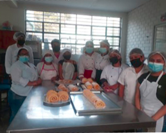

1º ELABORACIÓN DE PRODUCTOS DE PASTELERÍA: Elaboración de masas dulces y saladas. Elaboración de productos de pastelería. Preparación de cremas y decoración de tortas.
2º ELABORACIÓN DE TORTAS COMERCIALES: Elaboración y decoración de tortas semifríos, con cremas y frutas de estación.
3º ELABORACIÓN DE PRODUCTOS DE PANADERÍA: Elaboración de panes comerciales, enriquecidos y especiales (dulces y salados)
